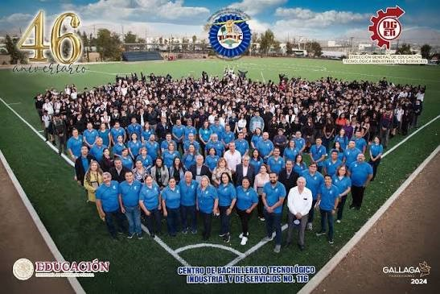

Aniversario CBTis 116
El plantel inició sus labores originalmente el 18 de septiembre de 1978
bajo el nombre de CECYT 406.
Tiempo después un 25 de septiembre de 1981 paso a formar
parte de la DGETi, renombrandose como:
Centro Bachillerato Tecnológico industrial y de servicios 116,
adoptando además a los Halcones como su mascota oficial.